尝试吃苹果
系统配置
| CPU | i7 7700k |
|---|---|
| GPU | GTX 1050 Ti |
| 主板 | ASUS PRIME Z270-P |
| 声卡 | 瑞昱 ALC887 |
| 网卡 | 瑞昱 RTL8186/8111/8112 |
具体请看鲁大师检测结果(原谅手机的渣像素)
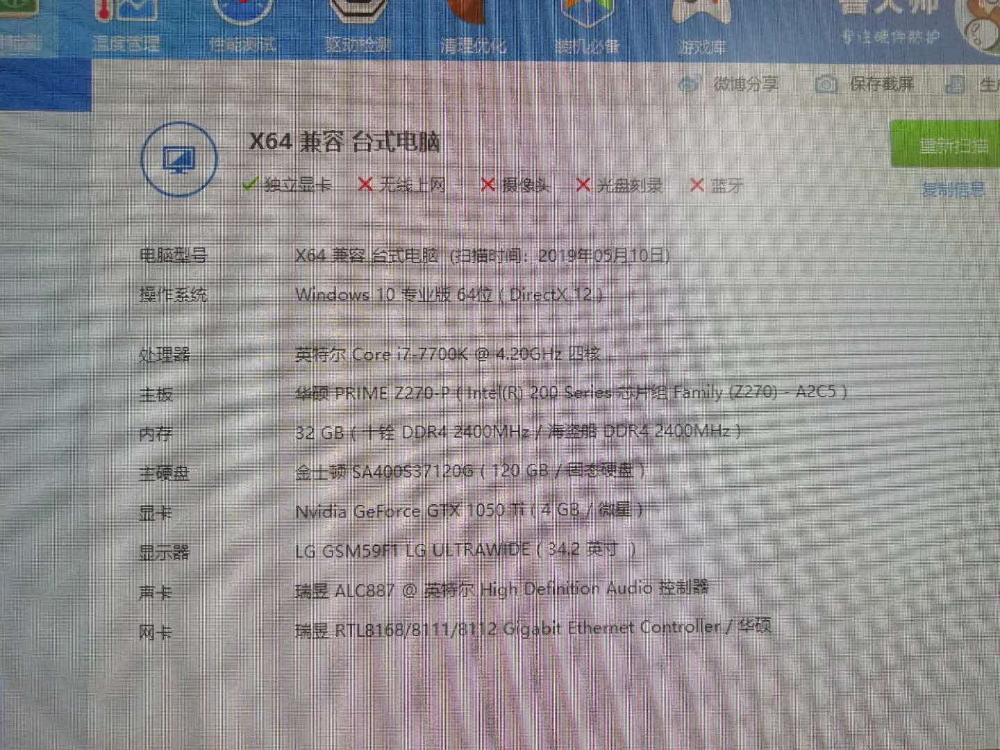
BIOS先恢复默认，然后设置成下边样子。
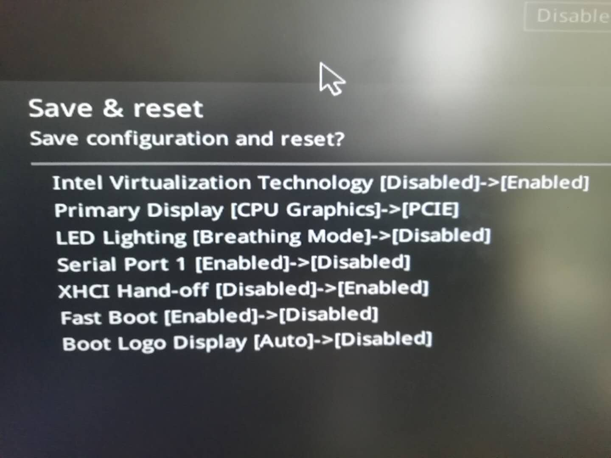
U盘启动
本来在虚拟机中装了一个macOS系统，想着使用tonymacx86网站提供的UniBeast软件写盘的，但是发现UniBeast在虚拟机中使用时不能写U盘。
后使用命令的方式将mac High Sierra.dmg镜像写入了U盘。
插入电脑进入BIOS设置从U盘启动，发现U盘没有引导程序，使用windows下的Transmac软件或者使用镜像中提供的工具写的U盘都额外需要使用Clover手动创建引导。创建引导的时候只需要写成EFI方式就好，其他的无所谓，因为后边还要修改参数。
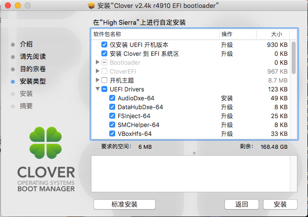
刚开始从网上找了一个和自己配置一样的EFI文件想着偷下懒，直接拖进U盘的EFI分区，后来发现启动不了，最后按照B站 爱折腾 前辈的建议，删掉所有东西遇到问题再添的思路，删掉了EFI/CLOVER/kexts目录下的所有东西，只留了一个EFI/CLOVER/kexts/Other/FakeSMC.kext。并且用Clover Configurator打开EFI/CLOVER/config.plist取消ACPI设置中的所有Fixes，并删掉了补丁栏目中的所有东西。再次插入U盘重启，打开-v参数，看到了下边的错误。
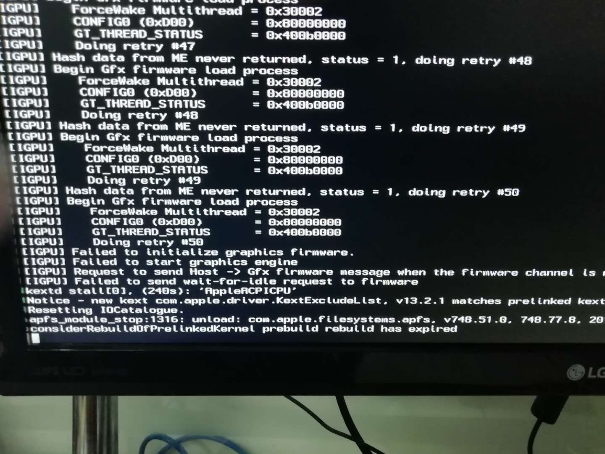
网上搜了一番后说是需要在引导参数中添加-disablegfxfirmware参数，终于进入U盘引导。
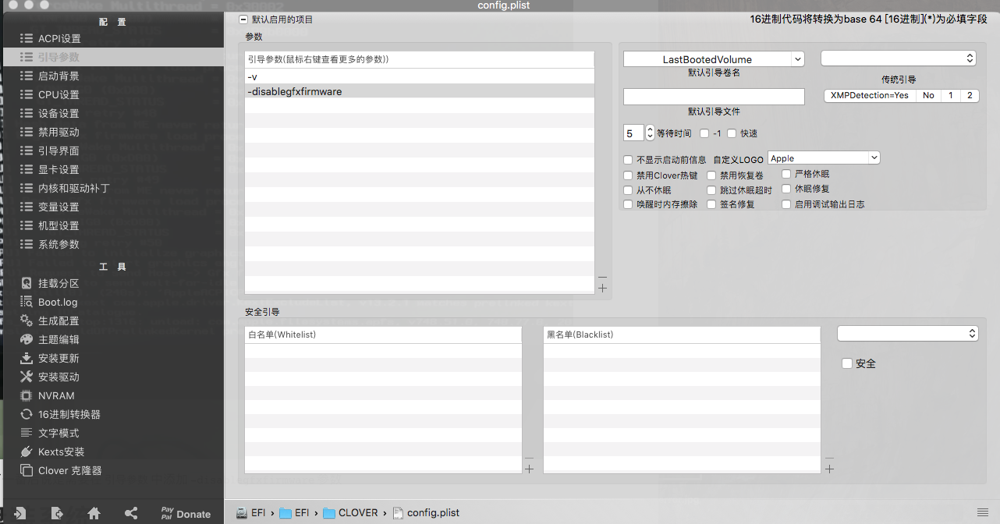
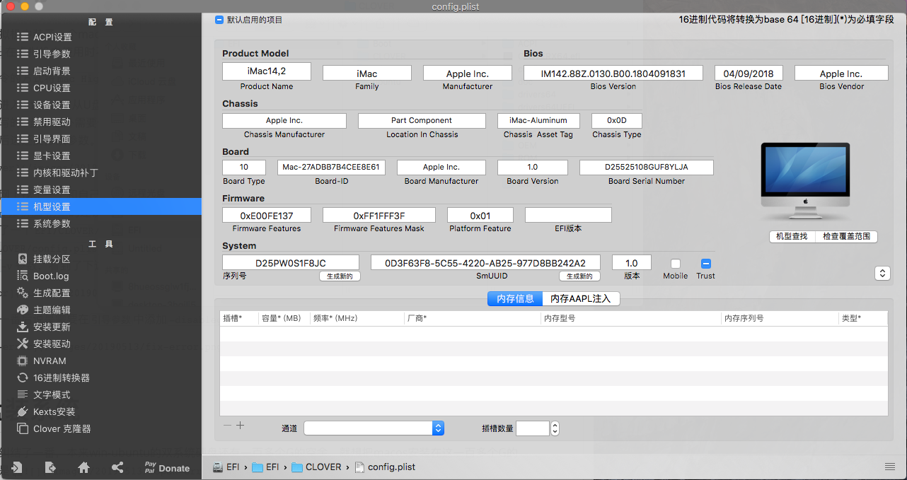
格盘装系统
这部分也纠结了一番，本来win-ubuntu的双系统硬盘还有一百多个G的空余，就想把macos安装在这一百多个G的空间，但是
后来，又搜索一番后，在这个磁盘的头部分配了一个500MB大小的EFI分区，才抹盘成功。
装驱动
网卡驱动
网卡驱动比较好弄，直接用MultiBeast
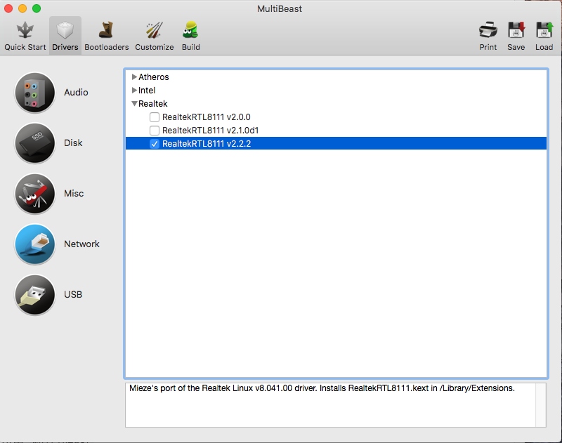
重启后就可以在关于本机->系统报告->网络部分看到。
这里还有一点，BIOS中要开启网络堆栈，不然的话进入系统后，能看到网卡，但是系统偏好设置->网络部分一直显示'未连接'或者'电缆拔出'
显卡驱动
在tonymacx86/Download/Nvidia Driver下载点最右边的图标是下载。
声卡驱动
首先使用AppleHDA Patcher软件show Jarvis
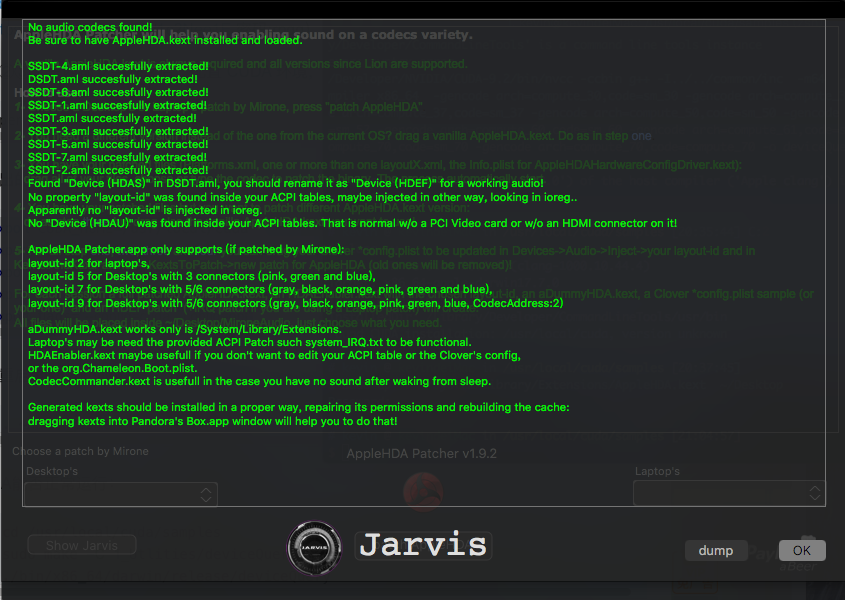
发现声卡未识别，显示Found "Device(HDAS)" in DSDT.aml, you should rename it as "Device(HDEF)" for a working audio
打开Clover Configurator 挂载EFI分区，用Clover Configurator打开EFI/CLOVER/config.plist
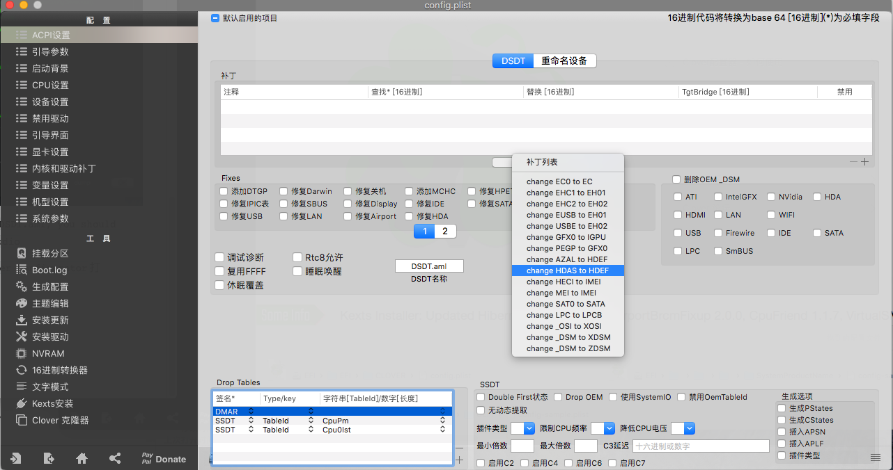
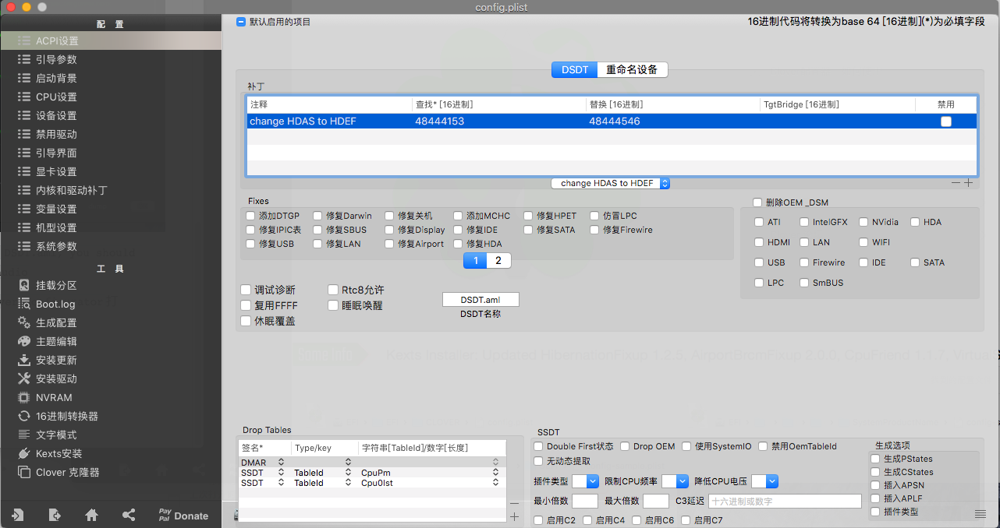
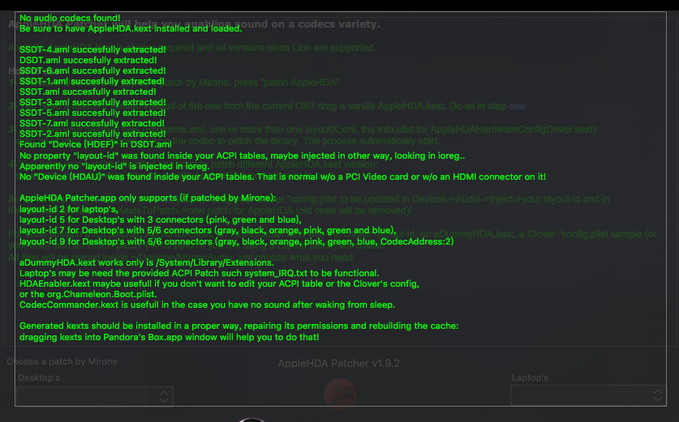
设置有效，但是仍然未识别出来声卡型号。
尝试使用万能声卡。
到sourceforge.net上搜索VoodooHDA,下载，拖到EFI/CLOVER/kexts/Other
重启后在关于本机->系统报告-> 音频

系统偏好设置 -> 声音 -> 输出
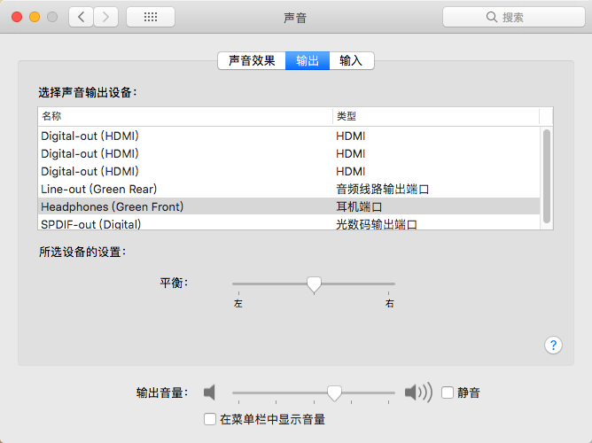
均能看到音频设备。
再次打开AppleHDA Patcher
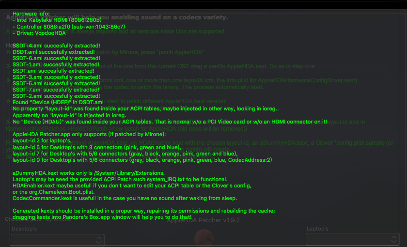
好像识别的是HDMI
下载安装网易云音乐随便放一首音乐，可以正常播放。
系统偏好设置 -> 声音 -> 输出下边的[]在菜单栏中显示音量勾选后就可以点击屏幕的右上角喇叭状图标调节音量，并选择输出设备。
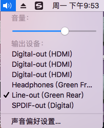
USB 3.0
USB3.0口无效，只能用来充电，即使是USB3.0的U盘也只能在USB2.0的口上被识别出来。
打开Clover Configuator挂载EFI分区，打开EFI/CLOVER/config.plist。
然后转到内核和驱动补丁选项，
| key | value |
|---|---|
| 名称 | com.apple.driver.usb.AppleUSBXHCI |
| 查找 | 837D880F 0F83A704 0000 |
| 替换 | 837D880F 90909090 9090 |
| 注释 | 随便写 |
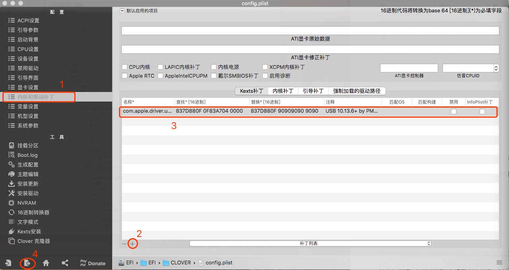
此外还要到这个网站下载USBInjectALL.kext驱动程序并放入EFI/CLOVER/kexts/Other目录中，然后重启。
重启后打开关于本机->系统报告->USB可以看到速度原本最大480Mb/秒的U盘现在识别为最大5 Gb/秒,U盘插入USB 3.0的插口也能正常识别。
TODO
- AppleALC原生驱动
- 长时间睡眠唤醒会一直黑屏
工具列表
| 名称 | 作用 |
|---|---|
| Clover | 引导工具 |
| Clover Configurator | Clover配置工具 |
| PlistEdit Pro | 同样是编辑CLOVER/config.plist的工具 |
| MultiBeast | 安装驱动以及安装clover到磁盘的EFI分区（有些驱动会安装失败） |
| Kext Wizard | 安装驱动到 /L/E，并构建内核驱动列表库 |
| DPCIManager | 查看网卡信息 |
| IORegistryExplorer | 查看系统硬件接口信息 |
| AppleHDA Patcher | 注入AppleALC |